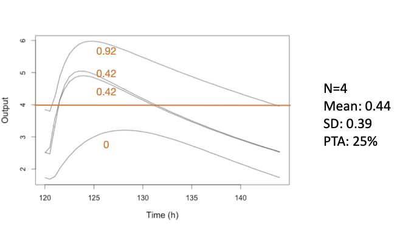
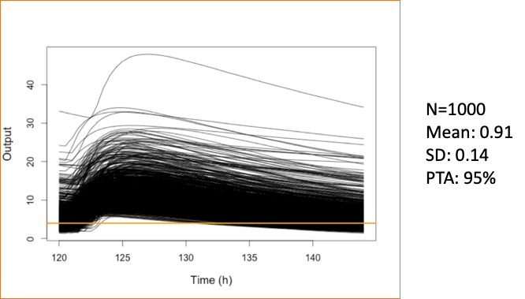

Introduction
Probability of target attainment (PTA) is a powerful application of simulated results. The idea is to calculate the proportion of simulated profiles corresponding to a particular dosage regimen which meet given criteria for “success”.
For example, it could be a certain AUC or time above a threshold. Below is a simple figure showing 4 concentration-time profiles after a gven dosage. If the target is percent of the dosing interval > 4 mg/L of at least 60% (0.6), then only one of the 4 curves meets this threshold, and the PTA is 25%. We can also generate the mean (44%) and standard deviation (39%) of the % time above 4 mg/L, also called the pharmacodynamic index (PDI) for this dosage.

Of course we usually simulate far more than 4 profiles! Below is the same dosage and target for 1000 profiles.

Creation
Pmetrics allows you to create a PTA in two ways.
- Use the
$pta()method attached toPM_sim()andPM_simlist()objects. - Use
PM_pta$new().
The only difference between these two is that with the first, you do not have to supply the name of your simulation object because you are operating upon it already.
Below is example code to create a PTA. Refer to makePTA for details on the arguments to the method.
#first define labels for simulated regimens
simlabels <- c("600 mg daily", "1200 mg daily", "300 mg bid", "600 mg bid")
#using a previously created simulation built into Pmetrics
pta1 <- simEx$pta(simlabels = simlabels,
targets = c(0.25, 0.5, 1, 2, 4, 8, 16, 32, 64), target.type = "time",
success = 0.6, start = 120, end = 144)
#using a sampled distribution of MICs from EUCAST
#for E.coli and piperacillin
#https://mic.eucast.org/search/
pip_ecoli <- data.frame(
mic = c(0.06, 0.125, 0.25, 0.5, 1, 2, 4, 8, 16, 32, 64, 128, 256, 512),
n = c(6, 16, 38, 312, 4820, 6883, 1214, 382, 776, 1335, 1137, 1184, 2043, 1288)
)
pta2 <- simEx$pta(simlabels = simlabels,
targets = makePTAtarget(pip_ecoli),
target.type = "time",
success = 0.6, start = 120, end = 144)Some things to point out…
We’ll say again that you must supply simulation data, which has been
previously generated. If you use the PM_sim$pta() method,
the simulation data are embedded in the object. If you use
PM_pta$new(), you have to supply the name of a
PM_simlist() object yourself.
Details of key arguments follow.
-
simlabels Optional character vector of labels for
each simulation (i.e. subject in the data template). Default is
c("Regimen 1", "Regimen 2",...). -
targets A vector of pharmacodynamic targets, such
as Minimum Inhibitory Concentrations (MICs), e.g. ‘c(0.25,
0.5,1,2,4,8,16,32)’. This can also be a sampled rather than the discrete
distribution using
makePTAtarget(). -
target.type A numeric or character vector, length
1. If numeric, must correspond to an observation time common to all the
PM_sim()objects in the simulation data, rounded to the nearest hour. In this case, the target statistic will be the ratio of observation at timetarget.typetotarget. This enables testing of a specific timed concentration (e.g. one hour after a dose or C1) which may be called a peak, but is not actually the maximum drug concentration. Be sure that the time in the simulated data is used, e.g. 122 after a dose given at 120. Character values may be one of “time”, “auc”, “peak”, or “min”, for, respectively, percent time above target within the time range specified by ‘start’ and ‘end’, ratio of area under the curve within the time range to target, ratio of peak concentration within the time range to target, or ratio of minimum concentration within the time range to target. - success A single value specifying the success statistic, e.g. 0.4 for proportion time (end-start) above target, or 100 for peak:target.
The created object pta1 is a PM_pta()
object, which has two data fields:
- results A data frame with the following columns: simnum, id, target, pdi.
- simnum is the number of the simulation
- id is the simulated profile number within each simulation
- target is the specified target
- pdi is the target pharmacodynamic index, e.g. time > target, auc:target, etc.
-
outcome A data frame summarizing the results with
the following columns: simnum, target,
prop.success, pdi.mean, and pdi.sd. If
‘targets’ was specified via
makePTAtarget()to be a sampled distribution, then the target column will be missing from the outcome table. - simnum and target are as for ‘results’.
- The prop.success column has the proportion with a pdi > ‘success’, as specified in the function call.
- The pdi.mean and pdi.sd columns have the mean and standard deviation of the target pharmacodynamic index (e.g. proportion end-start above target, ratio of Cmax to target) for each simulation and target.
It also has several methods:
- clone() to make a copy.
- save() and load() to save/load as an .rds file.
-
plot() to call
plot.PM_pta(). -
summary() to call
summary.PMpta()
Plotting
The most basic plot is achieved with a simple call to the method.
pta1$plot()
pta2$plot()Notice the difference between the plots, according to whether
target was discrete or from a distribution. The latter plot
is also know as a “Cumulative Fractional Response” or CFR, which is the
proportion of a population achieving a response for a give dosage with a
distribution of target values in that population.
There are many ways to modify the plot, consistent with other
Pmetrics plots which use the plotly package and all detailed in
the help for plot.PM_data(). For example,
p <- pta1$plot(line = list(color = "Set1", width = 3),
xlab = list(text = "MIC mg/L", font = list(size = 20)),
ylab = "Proportion with %T>MIC ≥ 60%",
xaxis = list(tickfont = list(size = 18)),
yaxis = list(tickfont = list(size = 18)),
legend = list(font = list(size = 18)),
marker = list(size = 16))Here’s more advanced plotly.
p %>% plotly::add_bars(x = ~mic,
y = ~round(n/sum(n),2),
marker = list(opacity = 0.6, color = "Dodgerblue"),
name = "MIC",
data = pip_ecoli,
width = ~mic*0.2,
showlegend = FALSE,
inherit = FALSE
) %>%
plotly::layout(xaxis = list(type = "log", dtick = log10(2)),
yaxis = list(title =
list(text = "<b>Proportion with %T>MIC ≥ 60%<br><span style='color:Dodgerblue; opacity:0.6'>MIC Frequency</span></b>")),
font = list(size = 10))Summarizing
Like most created Pmetrics objects, PM_pta() objects can
be summarized.
pta1$summary()
#> $pta
#> simnum target prop.success pdi.mean pdi.sd
#> 1 1 0.25 1.000 1.00000000 0.00000000
#> 2 1 0.50 1.000 1.00000000 0.00000000
#> 3 1 1.00 1.000 1.00000000 0.00000000
#> 4 1 2.00 1.000 0.99591026 0.02221332
#> 5 1 4.00 0.879 0.85620556 0.20199631
#> 6 1 8.00 0.373 0.44156374 0.36955150
#> 7 1 16.00 0.026 0.04902755 0.15782507
#> 8 1 32.00 0.000 0.00000000 0.00000000
#> 9 1 64.00 0.000 0.00000000 0.00000000
#> 10 2 0.25 1.000 1.00000000 0.00000000
#> 11 2 0.50 1.000 1.00000000 0.00000000
#> 12 2 1.00 1.000 1.00000000 0.00000000
#> 13 2 2.00 1.000 1.00000000 0.00000000
#> 14 2 4.00 1.000 0.99590659 0.02222990
#> 15 2 8.00 0.879 0.85617157 0.20201155
#> 16 2 16.00 0.373 0.44154185 0.36953289
#> 17 2 32.00 0.026 0.04902579 0.15781792
#> 18 2 64.00 0.000 0.00000000 0.00000000
#> 19 3 0.25 1.000 1.00000000 0.00000000
#> 20 3 0.50 1.000 1.00000000 0.00000000
#> 21 3 1.00 1.000 1.00000000 0.00000000
#> 22 3 2.00 1.000 1.00000000 0.00000000
#> 23 3 4.00 0.929 0.92541324 0.20283774
#> 24 3 8.00 0.413 0.42693722 0.44444392
#> 25 3 16.00 0.034 0.03606188 0.16692368
#> 26 3 32.00 0.000 0.00000000 0.00000000
#> 27 3 64.00 0.000 0.00000000 0.00000000
#> 28 4 0.25 1.000 1.00000000 0.00000000
#> 29 4 0.50 1.000 1.00000000 0.00000000
#> 30 4 1.00 1.000 1.00000000 0.00000000
#> 31 4 2.00 1.000 1.00000000 0.00000000
#> 32 4 4.00 1.000 1.00000000 0.00000000
#> 33 4 8.00 0.929 0.92540442 0.20284833
#> 34 4 16.00 0.413 0.42692964 0.44444172
#> 35 4 32.00 0.034 0.03606147 0.16692192
#> 36 4 64.00 0.000 0.00000000 0.00000000
#>
#> $pdi
#> # A tibble: 18 × 5
#> target simnum lowerCI median upperCI
#> <dbl> <chr> <dbl> <dbl> <dbl>
#> 1 0.25 1 1 1 1
#> 2 0.25 2 1 1 1
#> 3 0.5 1 1 1 1
#> 4 0.5 2 1 1 1
#> 5 1 1 1 1 1
#> 6 1 2 1 1 1
#> 7 2 1 0.946 1 1
#> 8 2 2 1 1 1
#> 9 4 1 0.341 1 1
#> 10 4 2 0.946 1 1
#> 11 8 1 0 0.433 1
#> 12 8 2 0.341 1 1
#> 13 16 1 0 0 0.604
#> 14 16 2 0 0.433 1
#> 15 32 1 0 0 0
#> 16 32 2 0 0 0.604
#> 17 64 1 0 0 0
#> 18 64 2 0 0 0
pta2$summary()
#> $pta
#> simnum prop.success pdi.mean pdi.sd
#> 1 1 0.784 0.7821113 0.3995824
#> 2 2 0.818 0.8237767 0.3692204
#> 3 3 0.784 0.7846817 0.4060330
#> 4 4 0.826 0.8268796 0.3739297
#>
#> $pdi
#> # A tibble: 4 × 4
#> simnum lowerCI median upperCI
#> <chr> <dbl> <dbl> <dbl>
#> 1 1 0 1 1
#> 2 2 0 1 1
#> 3 3 0 1 1
#> 4 4 0 1 1The output is a list with two named objects:
pta A data frame with the following columns: simnum, target, prop.success, pdi.mean, and pdi.sd
simnum is the number of the simulation
target is the specified target
success has the proportion with a ratio > prop.success
pdi.mean and pdi.sd are the mean and standard deviation of the pharmacodyamic index (e.g. AUC/MIC) for each simulation and target.
pdi A data frame with the following columns: target, simnum, lowerCI, median, upperCI.
target and simnum are as above.
lowerCI, median, and upperCI are the lower limit, median, and upper limit of the confidence interval for the pdi whose width is specified by an argument
cito the summary method. The default forciis 0.95, but this can be changed.
pta1$summary(ci = 0.9)
#> $pta
#> simnum target prop.success pdi.mean pdi.sd
#> 1 1 0.25 1.000 1.00000000 0.00000000
#> 2 1 0.50 1.000 1.00000000 0.00000000
#> 3 1 1.00 1.000 1.00000000 0.00000000
#> 4 1 2.00 1.000 0.99591026 0.02221332
#> 5 1 4.00 0.879 0.85620556 0.20199631
#> 6 1 8.00 0.373 0.44156374 0.36955150
#> 7 1 16.00 0.026 0.04902755 0.15782507
#> 8 1 32.00 0.000 0.00000000 0.00000000
#> 9 1 64.00 0.000 0.00000000 0.00000000
#> 10 2 0.25 1.000 1.00000000 0.00000000
#> 11 2 0.50 1.000 1.00000000 0.00000000
#> 12 2 1.00 1.000 1.00000000 0.00000000
#> 13 2 2.00 1.000 1.00000000 0.00000000
#> 14 2 4.00 1.000 0.99590659 0.02222990
#> 15 2 8.00 0.879 0.85617157 0.20201155
#> 16 2 16.00 0.373 0.44154185 0.36953289
#> 17 2 32.00 0.026 0.04902579 0.15781792
#> 18 2 64.00 0.000 0.00000000 0.00000000
#> 19 3 0.25 1.000 1.00000000 0.00000000
#> 20 3 0.50 1.000 1.00000000 0.00000000
#> 21 3 1.00 1.000 1.00000000 0.00000000
#> 22 3 2.00 1.000 1.00000000 0.00000000
#> 23 3 4.00 0.929 0.92541324 0.20283774
#> 24 3 8.00 0.413 0.42693722 0.44444392
#> 25 3 16.00 0.034 0.03606188 0.16692368
#> 26 3 32.00 0.000 0.00000000 0.00000000
#> 27 3 64.00 0.000 0.00000000 0.00000000
#> 28 4 0.25 1.000 1.00000000 0.00000000
#> 29 4 0.50 1.000 1.00000000 0.00000000
#> 30 4 1.00 1.000 1.00000000 0.00000000
#> 31 4 2.00 1.000 1.00000000 0.00000000
#> 32 4 4.00 1.000 1.00000000 0.00000000
#> 33 4 8.00 0.929 0.92540442 0.20284833
#> 34 4 16.00 0.413 0.42692964 0.44444172
#> 35 4 32.00 0.034 0.03606147 0.16692192
#> 36 4 64.00 0.000 0.00000000 0.00000000
#>
#> $pdi
#> # A tibble: 18 × 5
#> target simnum lowerCI median upperCI
#> <dbl> <chr> <dbl> <dbl> <dbl>
#> 1 0.25 1 1 1 1
#> 2 0.25 2 1 1 1
#> 3 0.5 1 1 1 1
#> 4 0.5 2 1 1 1
#> 5 1 1 1 1 1
#> 6 1 2 1 1 1
#> 7 2 1 0.989 1 1
#> 8 2 2 1 1 1
#> 9 4 1 0.417 1 1
#> 10 4 2 0.989 1 1
#> 11 8 1 0 0.433 1
#> 12 8 2 0.417 1 1
#> 13 16 1 0 0 0.357
#> 14 16 2 0 0.433 1
#> 15 32 1 0 0 0
#> 16 32 2 0 0 0.357
#> 17 64 1 0 0 0
#> 18 64 2 0 0 0